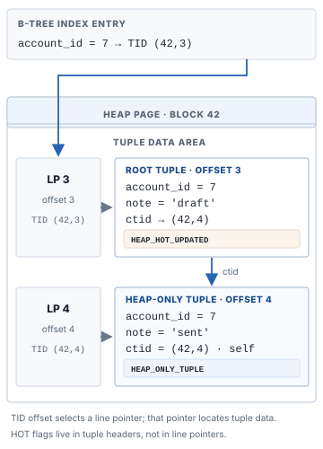

PostgreSQL은
TID에서 snapshot까지 확인한다
새 tuple version, 보이지 않는 후보, 그리고 HOT chain
인덱스에서 TID를 얻었다고 조회가 끝난 것은 아니다. heap의 해당 tuple version이 현재 조회에서 보이는지 확인해야 한다.
UPDATE
UPDATE는 새 tuple version을 만들 수 있다
PostgreSQL의 일반적인 UPDATE는 기존 tuple을 덮어쓰는 대신 heap에 새 tuple version을 만든다. 이 버전들은 같은 논리적 행의 이전·이후 모습이다. HOT이 아닌 경우 새 tuple version을 가리키는 인덱스 항목도 추가될 수 있다.[PG index access]
같은 논리적 주문: order_id = 22 이전 tuple version: status = 'paid' 새 tuple version: status = 'shipped' 새 tuple version ≠ 새 주문 행
VISIBILITY
Snapshot과 xmin/xmax는 무엇을 알려줄까?
Snapshot은 테이블 복사본이나 단일 시각 값이라기보다, 이 조회에서 어떤 트랜잭션의 변경이 보이는지 판정하는 기준이다. 먼저 이름이 같은 두 종류의 필드를 구분하자. tuple의 xmin/xmax는 tuple version을 만든 트랜잭션과 삭제·갱신을 시도한 트랜잭션을 가리킨다. 반면 Snapshot의 xmin/xmax는 XID 범위의 경계이고, xip[]는 snapshot을 얻을 때 진행 중이던 트랜잭션 ID 목록이다. XID 숫자만으로 최신/과거를 정하는 것은 아니다.[PG system columns][PG SnapshotData]
Snapshot의 경계와 진행 중 목록
원리를 보기 위한 단순화된 예시다. 실제 PostgreSQL은 XID wraparound를 고려한 비교와 subtransaction 등도 처리한다.
Snapshot (설명용) xmin = 100 xmax = 110 xip = [102, 105, 108]
| tuple을 만든/무효화한 XID | 이 snapshot에서의 해석 |
|---|---|
XID < snapshot.xmin | snapshot을 만들 때 이미 진행 중인 범위 밖으로 끝난 트랜잭션이다. 하지만 종료가 commit인지 abort인지는 별도로 확인해야 한다. |
snapshot.xmin ≤ XID < snapshot.xmax 이고 XID ∈ xip[] | snapshot 시점에 진행 중이었다. 그 트랜잭션의 변경은 이 snapshot에서 보이지 않으며, 이후 commit해도 같은 snapshot에서 소급해 보이지 않는다. |
같은 중간 범위지만 XID ∉ xip[] | snapshot 시점에는 진행 중이 아니었다. 그래도 commit/abort 상태를 확인해야 한다. commit된 변경만 보일 수 있고, abort된 변경은 보이지 않는다. |
XID ≥ snapshot.xmax | snapshot 시점에 아직 할당되지 않았거나 그 이후에 할당된 XID다. 그 트랜잭션의 변경은 이 snapshot에서는 보이지 않는다. |
요약하면 snapshot.xmin은 오래된 XID 쪽 경계, snapshot.xmax는 그 snapshot이 볼 수 없는 미래 쪽 경계, xip[]는 그 사이에서 당시 진행 중이던 XID를 표시한다. xip[]에 없다는 사실만으로 “commit됐다”고 단정하지 말고, transaction status도 확인해야 한다.[SnapshotData 정의]
먼저 tuple의 xmin으로 생성이 보이는지 본다
예를 들어 tuple version의 xmin = 103, xmax = 0이고 snapshot이 위 예시와 같다면, 103은 경계 사이에 있지만 xip[]에는 없다. 이는 snapshot 시점에 103이 진행 중이지 않았다는 뜻이다. 103이 commit된 것으로 확인되면 이 tuple version은 생성된 것으로 보일 수 있다. 반대로 xmin = 105라면 105가 xip[]에 있으므로 생성은 보이지 않는다. 105가 snapshot 직후 commit해도 이 snapshot의 판정은 바뀌지 않는다.
tuple의 xmax는 삭제·갱신이 보이는지 알려준다
이제 이전 tuple version이 xmin = 90, xmax = 105라고 하자. 90의 생성이 commit됐고 105가 snapshot의 xip[]에 있다면, snapshot은 105의 UPDATE/DELETE를 아직 보지 않는다. 따라서 이전 tuple은 여전히 보일 수 있다. xmax = 0은 보통 무효화 트랜잭션이 없는 상태지만, 실제 tuple의 xmax는 잠금 정보 등에도 쓰일 수 있어 숫자 하나만 보고 삭제 완료라고 판단하면 안 된다.
tuple xmin = 90 · xmax = 105
tuple xmin = 105 · xmax = 0
105가 진행 중인 snapshot에서는 old tuple의 xmax=105가 아직 효력이 없어 paid가 보이고, new tuple의 xmin=105도 아직 보이지 않는다. 105가 commit된 뒤 만들어진 새 snapshot에서는 old version이 무효화되고 new version이 보일 수 있다. 예를 들어 Read Committed에서는 다음 명령이 새 snapshot을 얻지만, Repeatable Read에서는 같은 트랜잭션 안의 후속 조회도 기존 snapshot을 유지한다.[PG transaction isolation][HeapTupleSatisfiesMVCC]
xmin은 “이 버전의 생성이 보이는가?”, tuple xmax는 “이 버전을 무효화한 변경이 보이는가?”를 묻는다. 둘을 Snapshot의 경계·xip[] 및 트랜잭션 상태와 대조해 최종 visibility를 결정한다.실제 판정에는 commit/abort 상태, 현재 트랜잭션과 command ID, subtransaction, hint bits 등이 관여한다. 이 예시는 MVCC 직관을 위한 모델이며, PostgreSQL 구현에서는 XID wraparound도 고려한다.[구현 코드]
따라서 인덱스의 오래된 TID가 아직 남아 있어도 무조건 옛 데이터를 반환하지 않는다. TID가 가리키는 tuple을 읽고 가시성을 판정해, snapshot에 맞지 않는 버전은 건너뛴다. 이전 버전이 더는 어떤 snapshot에도 필요 없게 되면 VACUUM이 정리할 수 있다.[PG vacuuming]
NON-HOT UPDATE
매칭되는 후보 TID는 하나씩 확인하나?
non-HOT UPDATE에서 새 인덱스 항목이 생기면 같은 검색 키로 여러 물리적 후보 TID가 나올 수 있다. 인덱스 스캔은 해당 키에 매칭된 항목들을 순회하고, 필요한 후보마다 heap tuple의 가시성을 확인한다. 보이지 않는 후보는 건너뛰고, 조건에 맞고 보이는 tuple을 결과로 낸다.
예: WHERE order_id = 22 B-tree에서 키 22의 후보를 찾음 후보 TID A → heap 확인 → snapshot에서 보이지 않음 → skip 후보 TID B → heap 확인 → snapshot에서 보임 → 반환
O(log M), 이 검색에서 확인할 후보 TID가 N개일 때 후보 검사의 최악을 O(N)이라 볼 수 있다. N은 해당 키로 매칭된 물리적 후보 수이지 테이블 전체 행 수가 아니다. `LIMIT` 등으로 일찍 끝날 수 있고, 실제 시간에는 heap 페이지 접근과 캐시 적중 여부가 크게 작용한다.즉 “후보가 N개면 언제나 정확히 N번 디스크를 읽는다”는 뜻은 아니다. N은 논리적 후보 검사량의 상한 감각이고, 페이지 I/O 횟수나 실행 시간과 동일하지 않다.
HOT UPDATE
HOT chain은 연결리스트와 얼마나 비슷할까?
HOT은 인덱스가 참조하는 컬럼이 바뀌지 않고, 같은 heap 페이지 안에 새 버전을 둘 공간이 있을 때 가능하다. 새 tuple version은 생성하지만, 그 버전을 위한 새 인덱스 항목을 생략한다. 기존 인덱스가 root TID를 가리키고, 같은 페이지 안의 tuple version 연결을 따라가게 한다.[PG HOT]
같은 페이지에 여유를 두는 table fillfactor
HOT은 아래 두 조건을 모두 만족해야 한다.
- 인덱스가 참조하는 컬럼을 바꾸지 않는다. 기존 인덱스 항목이 계속 같은 검색 키를 나타내야 한다.
- 새 tuple version이 같은 heap page 안에 들어갈 공간이 있다. 단지 테이블 어딘가에 빈 공간이 있는 것만으로는 부족하다.
왜 같은 페이지여야 할까? 기존 인덱스 항목은 기존 tuple의 root TID를 가리킨다. 새 버전이 같은 페이지에 있으면 HOT chain을 통해 그 버전까지 따라갈 수 있어 새 인덱스 항목을 만들지 않아도 된다. 반대로 새 버전이 다른 페이지에 놓이면 기존 root TID에서 같은 페이지의 chain으로 도달할 수 없으므로 새 인덱스 항목이 필요하고, 그 UPDATE는 HOT이 아니다.[PG HOT 조건]
이 두 번째 조건 때문에 테이블의 fillfactor를 낮춰 페이지에 UPDATE용 여유를 남긴다. 기본값 fillfactor = 100은 페이지를 가능한 한 빽빽하게 채우고, fillfactor = 80은 새 행을 넣을 때 페이지를 대략 80%까지 채워 나머지를 같은 페이지의 UPDATE에 쓸 수 있게 한다. 따라서 새 tuple version이 같은 페이지에 들어갈 가능성이 높아져 HOT도 더 자주 가능해질 수 있다. 이 값은 HOT 성공률 80%를 뜻하지 않으며, 첫 번째 조건도 계속 만족해야 한다.[PG table fillfactor]
ALTER TABLE orders SET (fillfactor = 80);
100이더라도 페이지에 우연히 여유 공간이 있으면 HOT은 발생할 수 있고, 80으로 낮춰도 필요한 공간이 부족하거나 인덱스 컬럼을 바꾸면 HOT이 보장되지 않는다. fillfactor는 테이블 설정이다. 값을 바꿔도 이미 꽉 찬 기존 페이지에 공간이 즉시 생기지는 않으며, 기존 데이터를 새 기준에 맞추려면 테이블 rewrite가 필요할 수 있다. 낮은 fillfactor는 행 밀도를 줄여 테이블 크기를 늘릴 수 있다.[PG ALTER TABLE]
ctid, line pointer, tuple flags가 연결을 표현한다

account_id는 그대로이고, 일반 컬럼 note만 바뀐 HOT UPDATE 예시다.그림에서 TID (42,3)은 heap block 42와 그 페이지의 line pointer 3번을 뜻한다. line pointer는 tuple 데이터가 페이지 안 어디에 있는지 가리킨다. root tuple의 ctid = (42,4)는 다음 tuple version의 위치이고, 그 새 tuple은 HEAP_ONLY_TUPLE flag로 별도 인덱스 항목이 없음을 나타낸다. 이전 tuple의 HEAP_HOT_UPDATED와 새 tuple의 HEAP_ONLY_TUPLE는 둘 다 tuple header의 상태 flag이지 line pointer의 flag가 아니다. 최신 tuple의 ctid는 자기 TID를 가리킨다. 그래서 연결리스트와 비슷하게 따라갈 수 있지만, 별도 linked-list 객체가 있는 것은 아니다.[PG page layout][PG ctid][HOT implementation notes]
PAGE PRUNING
중간 버전이 항상 남아 있는 것은 아니다
어떤 실행 중인 트랜잭션도 더는 볼 필요가 없는 중간 HOT 버전은 페이지 pruning으로 정리될 수 있다. 인덱스가 계속 가리키는 root line pointer는 재사용하지 않고, 아직 보일 수 있는 가장 오래된 버전으로 향하는 redirect로 남길 수 있다. 그래서 매번 모든 과거 버전을 끝까지 훑는 것은 아니다. 아래 토글을 열면 line pointer와 tuple이 바뀌는 과정을 볼 수 있다.[PG HOT][PG page layout]
Pruning 과정을 단계별로 펼쳐 보기
예시는 인덱스가 root의 LP1을 가리키고, 같은 heap page 안에 세 버전이 이어진 상황이다. V1과 V2는 각각 다음 버전을 ctid로 가리킨다.
표기: LP1 → V1은 line pointer가 tuple 본문을 가리키고, V1 --ctid→ LP2는 tuple header가 다음 버전의 위치를 가리킨다는 뜻이다.
- HOT chain이 있고, 오래된 버전이 아직 필요할 수 있다.
Index → LP1 → V1 V1 --ctid→ LP2 → V2 V2 --ctid→ LP3 → V3
아직 어떤 활성 snapshot이 V1 또는 V2를 볼 수 있다면 그 버전은 남겨둔다. Pruning은 페이지 안의 모든 과거 버전을 무조건 지우는 작업이 아니다.
- V1이 어떤 트랜잭션에도 더는 보이지 않으면, tuple 본문은 치우고 root LP1은 redirect로 보존한다.
Index → LP1 [REDIRECT] → LP2 → V2 V2 --ctid→ LP3 → V3 V1 tuple 본문 제거
인덱스가 LP1을 계속 참조하므로 LP1 자체를 없애거나 다른 용도로 재사용할 수 없다. 대신
LP_REDIRECT상태로 바꾸어, 아직 보일 수 있는 가장 오래된 버전의 line pointer인 LP2로 연결한다. - 나중에 V2도 더는 필요 없게 되면, 중간 버전을 제거하고 redirect 목적지를 갱신한다.
Index → LP1 [REDIRECT] → LP3 → V3 LP2와 V2: 회수·재사용 가능
V2는 인덱스가 직접 가리키지 않는 heap-only tuple이므로, 안전해진 뒤 tuple과 LP2를 함께 회수할 수 있다. LP1은 여전히 인덱스의 시작점으로 남고, 이제 LP3로 redirect한다.
이런 페이지 단위 정리는 일반 작업 중, 때로는 SELECT가 페이지를 읽을 때도 일어날 수 있다. VACUUM과 관련은 있지만 같은 작업은 아니다. HOT pruning은 해당 페이지의 dead tuple과 line pointer를 정리하고, VACUUM은 테이블 전반의 dead tuple 및 인덱스 정리 등 더 넓은 작업을 수행한다.[PG HOT pruning][PG routine vacuuming]